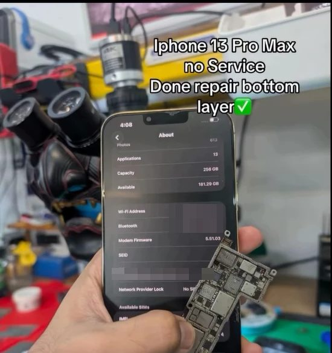

Phone mati total
Tiada respon langsung walaupun dicas dan butang power ditekan.
Phone mati total, asyik restart, tiada line atau tak detect SIM card? Kami buat diagnosis dan repair pada peringkat board.

Tiada respon langsung walaupun dicas dan butang power ditekan.
Phone asyik tersekat pada logo atau restart berulang kali.
Tiada signal walaupun SIM card berfungsi dalam phone lain.
Phone tidak mengesan SIM card yang dimasukkan.
Repair motherboard memerlukan peralatan khas seperti mikroskop dan stesen soldering. Kami periksa litar untuk mencari komponen yang rosak, kemudian berbincang dengan anda tentang penyelesaian dan kos sebelum mula.
Sangat berpuas hati dengan service di sini.. handphone kembali pulih selepas motherboard rosak akibat jatuh.. sangat recommended..
Sangat sangat berpuas hati... kerja yang kemas... cepat... harga barangan dan servis sangat berpatutan... Staff sangat berpengalaman dan friendly too...
Close to home, owner very helpful and fast service. Honest & clear when troubleshooting the problem. Price were really affordable, got my phone fixed twice here.
Selalunya boleh diperiksa. Phone mati total boleh disebabkan bateri, port charging atau komponen pada board. Kami diagnosis dahulu dan terangkan apa yang kami jumpa.
Kami berhati-hati dengan data anda, tetapi keadaan data bergantung pada kerosakan board. Kami akan maklumkan risiko sebelum mula.
Repair board biasanya mengambil masa lebih lama berbanding tukar skrin atau bateri. Kami akan beri anggaran masa selepas diagnosis.
Kedai kami di Telok Panglima Garang, dekat dengan Jalan Kebun, Rimbayu dan Shah Alam.
Lot 3745, Jalan Murai, Kampung Batu 9 Kebun Baru, 42500 Telok Panglima Garang, Selangor
| Isnin hingga Khamis & Sabtu | 10:00 pagi – 9:00 malam |
| Ahad | 12:00 tengah hari – 9:00 malam |
| Jumaat | 10:00 pagi – 1:00 petang 3:00 petang – 9:00 malam |